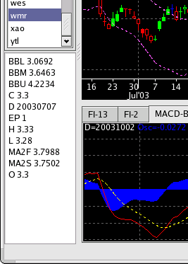
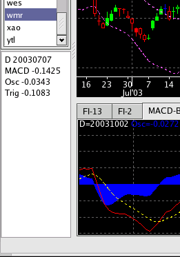

Data Panel
 
Description
The data panel, at the bottom-left of the screen, is used to display the data values as the mouse cursor moves over the chart or indicator windows.
When the cursor is in the chart window (left-hand screenshot), the panel will show the OHLC price information, the date, and the values for all chart indicators. When the cursor is in the indicator window (right-hand screenshot), the panel will show the date, and the values for the active indicator.